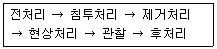

침투비파괴검사기능사 (2012-02-12 기출문제)
1과목: 침투탐상시험법(대략구분)
1. 약 1mm 정도 두께의 자동차용 다듬질 강판에 존재하는 라미네이션을 탐상하고자 할 때 가장 적합하게 적용할 수 있는 비파괴검사법은?
- 누설검사
- 침투탐상시험
- 자분탐상시험
- 초음파탐상시험
(정답률: 65%)

2. 각종 비파괴시험의 특징을 설명한 것으로 옳은 것은?
- 용접부의 언더컷 검출에는 음향방출시험이 적합하다.
- 강재의 내부균열 검출에는 자분탐상시험이 적합하다.
- 강재의 표면결함 검출에는 초음파탐상시험이 적합하다.
- 파이프 등의 표면결함 고속검출에는 와전류탐상시험이 적합하다.
(정답률: 82%)
3. 전자유도시험의 적용분야로 적합하지 않은 것은?
- 세라믹 내의 미세균열
- 비철금속 재료의 재질시험
- 철강 재료의 결함탐상시험
- 비전도체의 도금막 두께 측정
(정답률: 56%)
4. 침투탐상시험은 다공성인 표면을 검사하는데 적합한 시험 방법이 아니다. 그 이유로 가장 옳은 것은?
- 누설시험이 가장 좋은 방법이기 때문에
- 다공성인 경우 지시의 검출이 어렵게 때문에
- 초음파탐상시험이 가장 좋은 방법이기 때문에
- 다공성인 경우 어떤 지시도 생성시킬 수 없기 때문에
(정답률: 79%)
5. 침투탐상시험과 비교하였을 때 자분탐상시험의 장점으로 틀린 것은?
- 표면결함 및 표면하의 결함 검출에 우수하다.
- 검사표면이 도금되어 있을 때도 검사가 가능하다.
- 검사표면에 이어진 미세한 기공의 검출에 우수하다.
- 표면이 거친 검사표면일 경우 자분탐상시험이 더 우수한 결과를 얻을 수 있다.
(정답률: 39%)
6. 물질과 상호 작용하여 물질에 따라 투과하고 흡수되는 정도가 다른 성질을 이용하는 비파괴검사법은?
- 방사선투과시험
- 초음파탐상시험
- 자분탐상시험
- 침투탐상시험
(정답률: 53%)
7. 공기 중에서 초음파의 주파수가 5MHz 일 때 물속에서의 파장은 몇 mm 가 되는가? (단, 물에서의 초음파 음속은 1500m/s 이다.)
- 0.1
- 0.3
- 0.5
- 0.7
(정답률: 69%)
8. 시험체의 도금두께 측정에 가장 적합한 비파괴검사법은?
- 침투탐상시험법
- 음향방출시험법
- 자분탐상시험법
- 와전류탐상시험법
(정답률: 66%)
9. 강용접부의 자분탐상시험으로 가장 간편한 시험 방법은?
- 극간(Yoke)법
- 코일(coil)법
- 전류 관통법
- 축동전법
(정답률: 74%)
10. 자분탐상시험 결과 부품의 수명에 나쁜 영향을 주는 불연속을 무엇이라 하는가?
- 결함
- 의사 지시
- 건전 지시
- 단면급변 지시
(정답률: 73%)
11. 누설검사에 사용되는 단위인 1atm 과 값이 틀린 것은?
- 760mmHg
- 760torr
- 980kg/cm2
- 1013mbar
(정답률: 63%)
12. 침투탐상시험에서 후유화성 침투액의 유화제 역할을 설명한 것 중 옳은 것은?
- 형광을 더욱 밝게 해준다.
- 건식 현상제의 접촉을 용이하게 해준다.
- 침투액과 섞이지 않도록 막을 형성시킨다.
- 잉여 침투액을 물로 씻을 수 있도록 해준다.
(정답률: 68%)
13. 누설 개소와 누설량을 알 수 있으며, 일봉 부품이나 가스 용품에 탐상 가능하고 폭발의 위험이 없는 누설검사법은?
- 기포누설시험
- 헬륨누설시험
- 할로겐누설시험
- 암모니아누설시험
(정답률: 53%)
14. 일반적으로 방사선투과시험으로 결함을 판별할 때 가장 어려운 경우는?
- 결함의 수
- 결함의 종류
- 결함의 깊이
- 결함의 크기
(정답률: 64%)
15. 침투탐상검사에서 의사지시모양을 발생시키는 경우가 아닌 것은?
- 제거처리가 부적당한 경우
- 불연속의 균일성 지시가 나타난 경우
- 시험체의 형상에 복잡한 홈이 있는 경우
- 검사대의 잔여 침투액이 시험체 표면에 묻은 경우
(정답률: 62%)
16. 다음 중 잉여 침투액의 제거방법으로 틀린 것은?
- 수세성 잉여 침투액을 물을 사용하여 제거한다.
- 후유화성 잉여 침투액을 유화제 적용 후 물을 사용하여 제거한다.
- 용제제거성 잉여 침투액을 유기용제의 세척제를 사용하여 제거한다.
- 용제제거성 잉여 침투액 제거는 물베이스와 기름베이스 적용 방법이 있다.
(정답률: 47%)
17. 침투탐상검사의 전처리에 사용되는 세척제 중 녹이나 스케일을 제거하는데 적합하지 않은 것은?
- 황산
- 아세톤
- 가성소다
- 중크롬산소다
(정답률: 55%)
18. 수세성 염색침투액과 속건식현상제를 사용하는 경우 시험 절차 순서가 올바른 것은?
- 전처리 → 침투처리 → 제거처리 → 건조처리 → 현상처리 → 관찰 → 후처리
- 전처리 → 침투처리 → 세척처리 → 건조처리 → 현상처리 → 관찰 → 후처리
- 전처리 → 침투처리 → 제거처리 → 현상처리 → 건조처리 → 관찰 → 후처리
- 전처리 → 침투처리 → 세척처리 → 현상처리 → 건조처리 → 관찰 → 후처리
(정답률: 59%)
19. 침투탐상검사의 표준 시험온도로 적합하지 않은 것은?
- 5℃
- 15℃
- 25℃
- 35℃
(정답률: 75%)
20. 현상제가 가져야 할 요구 특성에 해당하지 않는 것은?
- 침투액을 흡출하는 능력이 좋아야 한다.
- 침투액을 분산시키는 능력이 좋아야 한다.
- 가능한 한 두껍게 도포할 수 있어야 한다.
- 형광침투제에 적용할 때는 형광성이 아니어야 한다.
(정답률: 70%)
2과목: 침투탐상관련규격(대략구분)
21. 수세성 염색침투탐상검사로 검사가 가능한 표면거칠기는 최대 어느 정도까지인가?
- 100㎛
- 300㎛
- 1000㎛
- 1300㎛
(정답률: 52%)
22. 모세관현상을 관할하기 위하여 액체로 물과 수은을 각각 사용한 경우, 유리관을 액체 내에 담갔을 때 유리관 내ㆍ외부와 액체 표면과의 관계를 옳게 설명한 것은?
- 물과 수은에서 모두 올라간다.
- 물과 수은에서 모두 내려간다.
- 물에서는 내려가고 수은에서는 올라간다.
- 물에서는 올라가고 수은에서는 내려간다.
(정답률: 69%)
23. 후유화성 형광침투액의 피로시험 항목에 속하지 않은 것은?
- 강도시험
- 점성시험
- 수세성시험
- 수분함유량시험
(정답률: 58%)
24. 감도와 분해능이 우수한 현상법으로 현상과 기록을 동시에 할 수 있는 장점을 가지고 있으며 정점 랙커 성분과 콜로이달 수치(colloidal resin)로 이루어져 있는 현상법은?
- 무현상법
- 건식현상법
- 습식현상법
- 플라스틱 필름 현상법
(정답률: 62%)
25. 환경 등의 안전을 고려하여 다음 중 침투탐상검사 시스템과 분리하여 설치해야 하는 장치는?
- 전처리장치
- 침투장치
- 유화장치
- 현상장치
(정답률: 59%)
26. 금속의 균열을 침투탐상검사할 때 일반적으로 검사 결과에 가장 큰 영향을 주는 것은?
- 검사물의 경도
- 침투제의 색깔
- 검사물의 열전도도
- 검사물의 표면 조건
(정답률: 80%)
27. 다음 중 모세관 현상을 결정하는 인자와 가장 거리가 먼 것은?
- 점성
- 점착력
- 표면장력
- 지속밀도
(정답률: 67%)
28. 침투탐상 시험방법 및 침투지시모양의 분류(KS B 0816)에 따른 침투지시모양의 관찰은 언제 하는 것이 바람직한가?
- 현상제 적용 후 1~5분 사이
- 현상제 적용 후 7~60분 사이
- 현상제 적용 전 1~5분 사이
- 현상제 적용 전 7~60분 사이
(정답률: 76%)
29. 침투탐상 시험방법 및 침투지시모양의 분류(KS B 0816)에 따라 탐상시험시의 온도 기록에 있어서 시험체와 침투액의 온도가 몇 ℃ 이하인 경우 반드시 기재하여야 하는가?
- 10℃
- 15℃
- 25℃
- 37℃
(정답률: 53%)
30. 침투탐상 시험방법 및 침투지시모양의 분류(KS B 0816)에 따라 다음과 같은 탐상 순서를 갖는 시험 방법의 기호로 옳은 것은?

- FA-W
- FB-W
- FC-D
- FC-N
(정답률: 45%)
31. 침투탐상 시험방법 및 침투지시모양의 분류(KS B 0816)에 따른 탐상제의 점검에서 침투액을 성능시험하여 결함의 검출능력이 저하된다고 판단될 때 그 침투액은 어떻게 하여야 하는가?
- 폐기한다.
- 가열하여 수분을 제거하고 재사용한다.
- 사용하지 않은 새 제품의 침투액과 혼합하여 사용한다.
- 규정된 값이 되도록 열풍 건조하여 농도를 측정하고 사용한다.
(정답률: 79%)
32. 침투탐상 시험방법 및 침투지시모양의 분류(KS B 0816)에 따라 후유화성 염색침투탐상시험시 유화시간은 세척처리를 확실히 실시할 수 있는 범위내의 최소 시간으로 하여야 하는데 원칙적으로는 몇 분 이내로 하여야 하는가?
- 2분
- 5분
- 10분
- 15분
(정답률: 35%)
33. 침투탐상 시험방법 및 침투지시모양의 분류(KS B 0816)에 따라 형광침투제에 사용되는 자외선등의 파장 범위로 적합한 것은?
- 220~300mm
- 320~400mm
- 420~480mm
- 520~580mm
(정답률: 74%)
34. 침투탐상 시험방법 및 침투지시모양의 분류(KS B 0816)에 따른 수세성 및 후유화성 침투액은 무엇으로 세척하는가?
- 물
- 공기
- 알코올
- 유기용제
(정답률: 86%)
35. 항공우주용 기기의 침투탐상검사 방법(KS W 0914) 에서 침투액의 제거를 위한 자동 스프레이법의 수온은 몇 ℃ 범위를 유지하도록 하는가?
- 0 ~ 4
- 5 ~ 8
- 10 ~ 38
- 40 ~ 68
(정답률: 56%)
36. 침투탐상 시험방법 및 침투지시모양의 분류(KS B 0816)에 따른 플라스틱 재질의 갈라짐에 대한 탐상시 상온에서의 표준 침투시간과 현상시간의 규정으로 옳은 것은?
- 침투시간 : 5분, 현상시간 : 7분
- 침투시간 : 3분, 현상시간 : 7분
- 침투시간 : 5분, 현상시간 : 5분
- 침투시간 : 3분, 현상시간 : 5분
(정답률: 82%)
37. 침투탐상 시험방법 및 침투지시모양의 분류(KS B 0816)에 따라 현상제를 적용한 후 관찰할 때까지의 시간인 현상 시간은 현상제의 종류, 예측되는 결함의 종류와 크기 및 시험품의 온도에 따라 결정되는데 온도가 15~50℃인 경우 알루미늄 단조품의 갈라짐 검출에 대해 규정한 표준 현상 시간은?
- 3분
- 5분
- 7분
- 10분
(정답률: 52%)
38. 침투탐상 시험방법 및 침투지시모양의 분류(KS B 0816)에 따라 합격한 시험체에 표시를 필요로 할 때 전 수 검사인 경우 각인 또는 부식에 의한 표시 기호로 옳은 것은?
- P
- ⓟ
- OK
- ⓞ
(정답률: 52%)
39. 침투탐상 시험방법 및 침투지시모양의 분류(KS B 0816)에 따라 샘플링 검사에 합격한 로트에 표시할 착색으로 옳은 것은?
- 황색
- 흰색
- 적색
- 녹색
(정답률: 75%)
40. 침투탐상 시험방법 및 침투지시모양의 분류(KS B 0816)에 따른 결함의 분류는 모양 및 존재 상태에 따라 정한다. 이에 의한 결함에 해당되지 않은 것은?
- 독립 결함
- 연속 결함
- 분산 결함
- 불연속 결함
(정답률: 71%)
3과목: 금속재료일반 및 용접일반(대략구분)
41. 침투탐상 시험방법 및 침투지시모양의 분류(KS B 0816)에 따른 A형 대비시험편에 대한 설명으로 옳은 것은?
- 시험편의 재료는 A2024P 이다.
- 시험편의 결함 재료는 C2600P 이다.
- 520~530℉로 가열한 후 급냉시켜 터짐을 발생시킨다.
- 950~975℃로 가열한 후 급냉시켜 터짐을 발생시킨다.
(정답률: 66%)
42. 침투탐상 시험방법 및 침투지시모양의 분류(KS B 0816)에 대한 B형 대비시험편 종류의 기호와 도금두께, 도금 갈라짐 나비의 나열이 옳지 않은 것은? (단, 도금 두께, 도금 갈라짐 너비의 단위는 ㎛이다.)
- PT-B50 : 50 ± 5, 2.5
- PT-B40 : 40 ± 3, 2.0
- PT-B20 : 20 ± 2, 1.0
- PT-B10 : 10 ± 1, 0.5
(정답률: 69%)
43. 4%Cu, 2%Ni 및 1.5%Mg 이 첨가된 알루미늄 합금으로 내연기관용 피스톤이나 실린더 헤드 등으로 사용되는 재료는?
- Y 합금
- Lo-Ex 합금
- 라우탈(lautal)
- 하이드로날륨(hydronalium)
(정답률: 67%)
44. 고탄소 크롬베어링강의 탄소함유량의 범위(%)로 옳은 것은?
- 0.12 ~ 0.17%
- 0.21 ~ 0.45%
- 0.95 ~ 1.10%
- 2.20 ~ 4.70%
(정답률: 47%)
45. 금속의 표면에 Zn을 침투시켜 대기 중 청강의 내식성을 증대시켜 주기 위한 처리법은?
- 세라다이징
- 크로마이징
- 칼로라이징
- 실리코나이징
(정답률: 45%)
46. 탄소강의 표준조직에 해당하는 것은?
- 펄라이트와 마텐자이트
- 페라이트와 소르바이트
- 펄라이트와 페라이트
- 페라이트와 베이나이트
(정답률: 68%)
47. 흑연을 구상화시키기 위해 선철을 용해하여 주입 전에 첨가하는 것은?
- Cs
- Cr
- Mg
- Na2CO3
(정답률: 61%)
48. α고용체 + 용융액 ⇆ β고용체의 반응을 나타내는 것은?
- 공석반응
- 공정반응
- 포정반응
- 편정반응
(정답률: 48%)
49. 다음 중 반자성체에 해당하는 금속은?
- 철(Fe)
- 니켈(Ni)
- 안티몬(Sb)
- 코발트(Co)
(정답률: 63%)
50. 라우탈은 Al-Cu-Si 합금이다. 이중 3~8% Si를 첨가하여 향상되는 성질은?
- 주조성
- 내열성
- 피삭성
- 내식성
(정답률: 46%)
51. 백선철을 900~1000℃ 로 가열하여 탈탄시켜 만든 주철은?
- 칠드 주철
- 합금 주철
- 편상흑연 주철
- 백심가단 주철
(정답률: 62%)
52. 다음 중 용융점이 가장 낮은 금속은?
- Zn
- Sb
- Pb
- Sn
(정답률: 48%)
53. 고속베어링에 적합한 것으로 주요 성분이 Cu+Pb인 합금은?
- 톰백
- 포금
- 켈멧
- 인청동
(정답률: 58%)
54. 금속간 화합물에 대한 설명으로 옳은 것은?
- 변형하기 쉽고, 인성이 크다.
- 일반적으로 복잡한 결정구조를 갖는다.
- 전기저항이 낮고, 금속적인 성질이 우수하다.
- 성분금속 중 낮은 용융점을 갖는다.
(정답률: 44%)
55. 알루미늄(Al)의 특성을 설명한 것 중 옳은 것은?
- 온도에 관계없이 항상 체심입방격자이다.
- 강(steel)에 비하여 비중이 가볍다.
- 주조품 제작시 주입온도는 1000℃ 이다.
- 전기 전도율이 구리보다 높다.
(정답률: 71%)
56. 문쯔메탈(Muntz metal)이라 하며 탈아연 부식이 발생하기 쉬운 동합금은?
- 6-4 황동
- 주석 청동
- 네이벌 황동
- 애드미럴티 황동
(정답률: 64%)
57. 소성변형이 일어나면 금속이 경화하는 현상을 무엇이라 하는가?
- 가공경화
- 탄성경화
- 취성경화
- 자연경화
(정답률: 63%)
58. AW 240 용접기를 사용하여 용접했을 때 허용 사용률은 약 얼마인가? (단, 실제 사용한 용접전류는 200A 이었으며 정격 사용률은 40%이다.)
- 33.3%
- 48.0%
- 57.6%
- 83.3%
(정답률: 54%)
59. 다음 중 용접 후 잔류응력이 제품에 미치는 영향으로 가장 중요한 것은?
- 언더컷이 생긴다.
- 용입 부족이 된다.
- 용착 불량이 생긴다.
- 변형과 균열이 생긴다.
(정답률: 56%)
60. 다음 중 가스용접 토치 취급시 주의사항으로 적합하지 않은 것은?
- 점화되어 있는 토치는 함부로 방치하지 않는다.
- 토리를 망치나 갈고리 대용으로 사용해서는 안 된다.
- 팁이 가열되었을 때는 산소 밸브와 아세틸렌 밸브가 모두 열려있는 사태로 물속에 담근다.
- 작업 중에는 역류, 역화, 인화 등에 항상 주의하여야 한다.
(정답률: 80%)